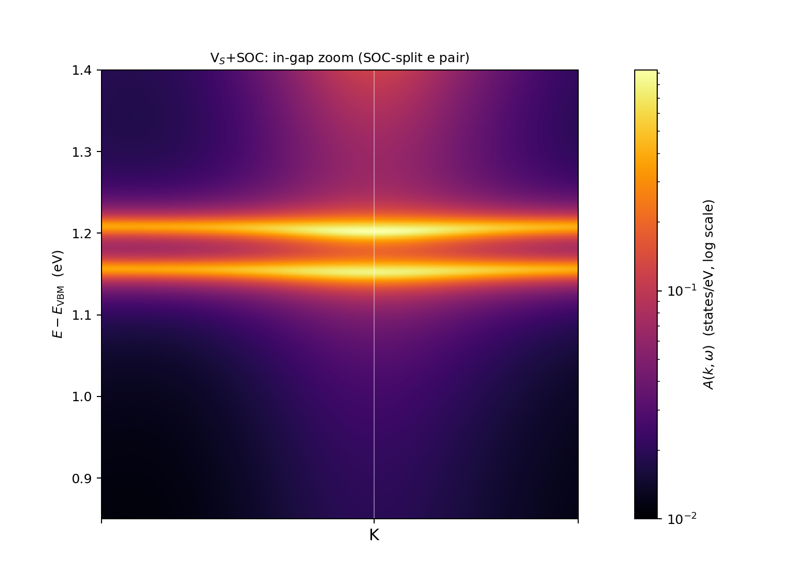
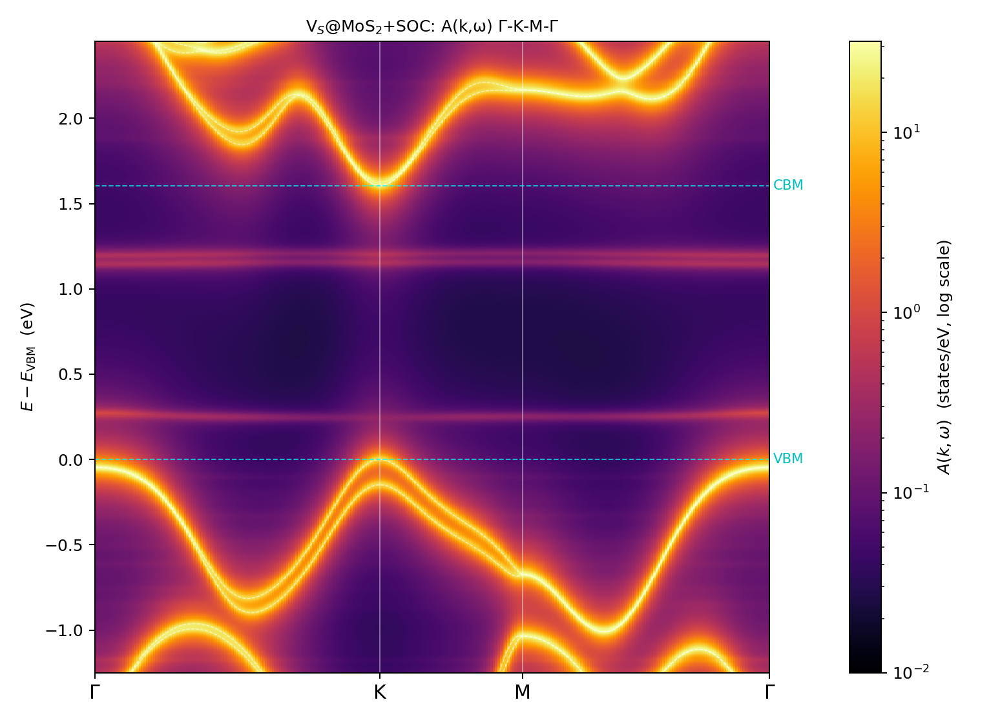
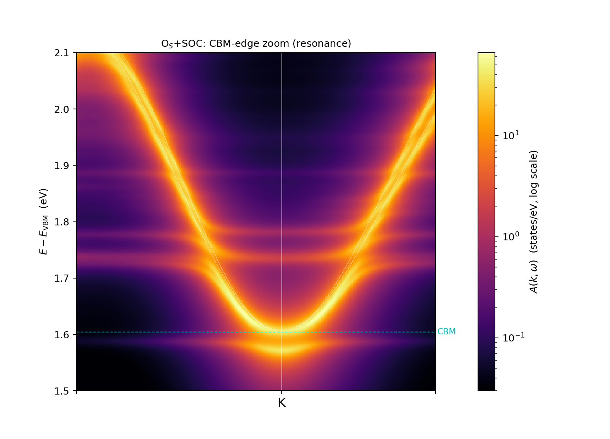
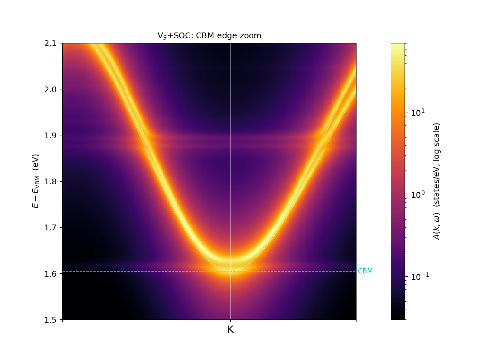
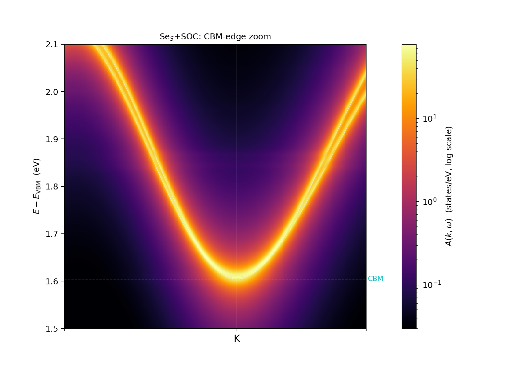

1 · What changes with SOC, and what was validated first
With spin–orbit coupling the Kohn–Sham states become two-component spinors, $\psi_{nk}=(\psi^{\uparrow}_{nk},\psi^{\downarrow}_{nk})$, the nonlocal pseudopotential acquires the $j$-resolved form $\sum_{ij}|\beta_i\rangle D^{\sigma\sigma'}_{ij}\langle\beta_j|$ (QE's dvan_so, four spin blocks), and every band of the scalar campaign doubles. The EDI direct-mode vertex $M(nk,mk')=\langle\psi_{nk}|\Delta V|\psi_{mk'}\rangle$ inherits all of this; the basis-augmentation machinery (A1) needs a genuine extension:
- Spinor augmentation. The scalar pseudo-atomic orbitals $\chi_{lm}$ of the defect species are promoted to spinors as $\chi\otimes|{\uparrow}\rangle,\ \chi\otimes|{\downarrow}\rangle$ ($n_\chi\to 2n_\chi$: O 2s+2p gives 8 spinor generators per $k$). This spans the same space as the $j$-coupled combinations (a unitary rotation), so nothing is lost by staying scalar-radial. Projection, Löwdin orthogonalization, and the $\langle\chi|H_p|\chi\rangle$ blocks (kinetic per spin component, local per component, Kleinman–Bylander via
dvan_so) all gained explicit two-component branches —edi_v7a.x. - Scalar path untouched (A/B gate). Running v7a and the scalar-production v6b on identical scalar inputs in the same directory: augmented and unaugmented $M$ binaries bitwise identical, Löwdin Gram spectra identical to every printed digit, and the $4\times4$ $h^p$ block equal to $10^{-14}$ relative (compiler re-vectorization noise in the rewritten kinetic loop). The spinor code cannot have corrupted any scalar result on this site.
- Pseudopotential repairs. SG15 FR-1.0 UPFs ship Fortran field-overflow artifacts — literal
index="*"attributes (W: 5, Se: 1, Mo: 1). The indices were rebuilt from the self-labeling block tags. SG15 also ships emptyPP_PSWFC: the augmentation orbitals were grafted in from scalar-relativistic donors on the identical 602-point radial mesh (O: the production-validated native-$\chi$ file of the scalar campaign; Se: solved with the radial KS solver, 4S $-1.270$, 4P $-0.483$ Ry). A grafted FR file additionally needsPP_RELWFCentries ($j_\chi=l+\tfrac12$) or QE's reader aborts. Trap for reproducers: solving the radial atom directly on an FR pseudopotential is wrong — a scalar solver sums the two $j$ channels of the KB projectors instead of $(2j{+}1)$-averaging them (O 2s came out $-1.09$ instead of $-1.77$ Ry).
2 · Host validation: textbook SOC numbers, exact Kramers
MoS$_2$ host (SG15-FR, 100 Ry, frozen scalar geometry $a=3.18518$ Å), 12×12 grid, 170 spinor bands:
| SOC campaign | scalar campaign | reference | |
|---|---|---|---|
| direct gap at K | 1.6041 eV | 1.657 eV | SOC closes the gap by $\sim\Delta_{\rm VB}/2$ |
| K-valley VB splitting | 149.0 meV | — | $\approx$148–150 meV (textbook) |
| K-valley CB splitting | 3.0 meV | — | $\approx$3 meV |
| Kramers splitting at the 4 TRIM points | 0.0000 meV | — | exact (time reversal) |
| $E_n(k)=E_n(-k)$ over the full grid | 0.0000 meV (138 pairs) | — | exact |
The 22-band active manifold (14 valence + 8 conduction spinor bands, 13–34) is isolated on both sides (6.13 eV below, 0.562 eV above), so the 22-WF spinor Wannier gauge (spinors=.true., Mo:$d$ + S:$p$, no disentanglement) is a square unitary per $k$ — the scalar pipeline's structure carries over unchanged. Gauge quality: $\Omega_{\rm tot}=37.52$ Å$^2$ (exactly 2× the scalar 18.75), $H(R)$ far-shell decay $5.9\times10^{-6}$, grid-point band reproduction 0.03 meV.
3 · Defect-level verdicts against supercell DFT
All three defects of the scalar campaign were rerun with SOC end-to-end: 6×6 spinor supercells (pristine + defect), potential extraction, EDI vertex on 144 $k$ × 140 bands (+8 spinor $\tilde\chi$ for the new-element defects), and the $H_{\rm eff}$ diagonalization (21312-dim) judged against the deep-state-aligned supercell spectra. Every level below is a Kramers pair.
| defect | supercell-DFT truth ($E-E_{\rm VBM}$) | $H_{\rm eff}$ (144k) | verdict |
|---|---|---|---|
| V$_S$ | $a_1$ +0.053; $e$ pair +1.0880 / +1.1356 (split 47.6 meV) | $a_1$ +0.186 (slow mode, as in every basis); pair +1.1334 / +1.1832 (split 49.8 meV) | splitting reproduced to 2.2 meV; absolute +46 meV = the familiar common-mode |
| O$_S$ | gap empty; resonance family at CBM+12 meV | gap clean (spinor $\tilde\chi$ cures the +0.7 eV push-up exactly as in the scalar A1); CBM-edge family at $-26$ meV common-mode, SOC sub-splitting 1.3 meV | the scalar "conduction-edge resonance, not an in-gap state" verdict survives SOC |
| Se$_S$ | benign isovalent: gap empty | gap empty; band edges to $\sim$10 meV | golden; Löwdin Gram range $3.4\times10^{-3}$–$5.6\times10^{-3}$ — the host basis already covers 99.5% of the Se orbitals (cf. O$_S$: 0.16–0.21), an independent echo of the augmentation-necessity measurement |
Data quality gates on every vertex binary: $\max|M-M^\dagger|=0$ bitwise, diagonal $\mathrm{Im}\,M_{ii}\sim10^{-15}$ eV, supercell commensurability $9.9\times10^{-5}$ bohr.
4 · Spectral functions: the SOC-split vacancy doublet
$A(k,\omega)$ along $\Gamma$–K–M–$\Gamma$ from the downfolded active-space vertex (static fold at $\omega_0$, full-order rest-space inverse including the $\tilde\chi$ sector), Wannier-interpolated to the path and resummed with the exterior T-matrix relation in the Dyson form ($\Sigma=T$, $A\ge0$ structurally). Same machinery as the scalar §9 maps, now with $n_w=22$ spinor WFs.



4.1 The CBM-edge triptych: strong / weak / silent
Repeating the identical zoom (window 1.5–2.1 eV, $\omega_0$ at the CBM, $\eta=8$ meV, colour floor $3\times10^{-2}$) for all three defects turns the conduction-band edge into a comparative strength gauge. O$_S$ (above) shows the full resonance ladder with avoided crossings; V$_S$ shows only weak in-band echoes; Se$_S$ is essentially silent. The ordering matches the Löwdin Gram fingerprints (O$_S$ 0.16–0.21 vs Se$_S$ $3.4\times10^{-3}$) and the scalar-campaign mobility ranking (Se$_S$ the gentlest scatterer).


Quality gates common to all three maps: $H(R)$ far-shell decay $1.3\times10^{-4}$ (the scalar-era gate value), grid-point band reproduction $1.5\times10^{-9}$ eV, $A(k,\omega)\ge0$ everywhere.
5 · Pitfalls box (what actually bit, in order)
index="*"in SG15 FR UPFs — Fortran I1 overflow in the shipped files; QE tolerates it with a warning, but $\beta$-projector indexing pairs withdvan_so, so repair (from the block-tag numbers), don't trust.- Radial solves on FR pseudopotentials double-count $j$ channels — graft $\chi$ from SR donors on the identical mesh.
- Grafted FR files need
PP_RELWFC— QE's reader requires one entry per wavefunction whenhas_so; validated by the noncolin atomic-wfc counting (12 = O 6 + S/Se 6). - No $\Gamma$-trick for spinors — noncolin supercells must use the complex $\Gamma$ point.
- A leftover scalar-only guard (
aug_orbitals: collinear case only) survived the v7 patch set and killed the first spinor-augmentation runs; the A/B regression was scalar by construction and could never have caught it. Removed in v7a. - Spinor EDI memory — the scalar single-node pool topology OOMs at $n_{\rm pol}=2$; 4 nodes × 36 single-rank pools is the working layout. Runtime $\sim$71 min (MoS$_2$, 148 spinor states) per defect.
- $k$-fold boundary fuzz — crystal-coordinate reconstruction through a truncated cell matrix can land at $0.99999\ldots$; every $k$-matching key needs the double-mod fold
round(x % 1, 5) % 1.
Companion arm: the same spinor pipeline is running for WSe$_2$ (O$_{\rm Se}$ / V$_{\rm Se}$ / S$_{\rm Se}$, 75 Ry). Status: S$_{\rm Se}$ golden; V$_{\rm Se}$ e-pair splitting 148 meV vs supercell truth 163 meV after a 280-band boost (Ritz-descent trend closing); O$_{\rm Se}$ requires a harder basis (100 Ry arm pending). A dedicated page will follow when that campaign closes.